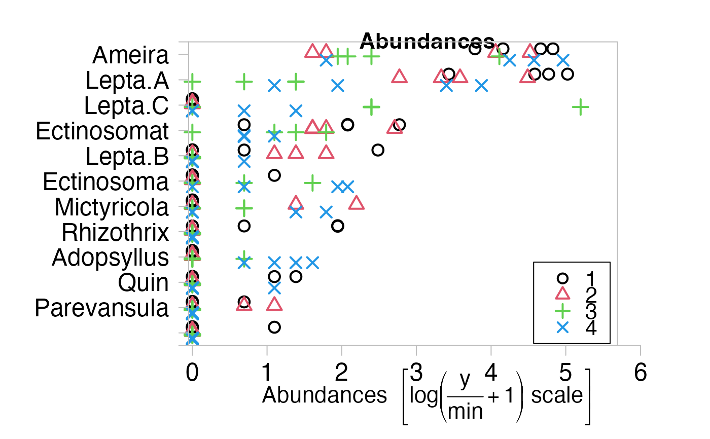
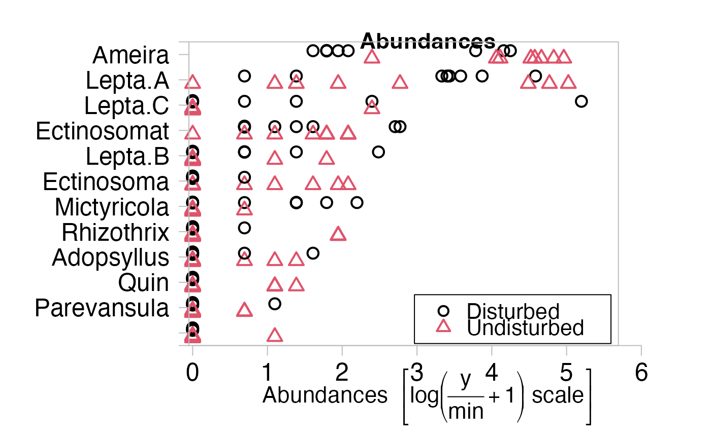

Tasmania.RdThis dataset contains a list with community abundance data of species and two factor variables, namely treatment and block. See (Warwick et.al. (1990)) for more details.
data(Tasmania)A list containing the elements
A data frame with 16 observations of 56 Meiobenthos species exposed to a disturbance treatment in a spatially blocked design. Four blocks of four samples were collected such that each block comprised of two disturbed and undisturbed samples.
A subset of abund of 12 Copepod species.
A subset of abund of 39 Nematode species.
A two-level factor veraible.
A four-level factor variable.
The count data (number of each Meiobenthos species in each sample) were collected in a spatia
lly blocked design. The labels are made to the four replicate cores within each block,
with B labeling for the block ID and D labeling for the disturbed sample ID and U labeling for the undisturbed sample ID. The data frame abund contains 12 Copepod species, 39 Nematode species and 4 undetermined ones.
The 12 Copepod species are:
Ameira, Adopsyllus, Ectinosoma, Ectinosomat, Haloschizo,
Lepta.A, Lepta.B, Lepta.C, Mictyricola, Parevansula,
Quin, Rhizothrix
The 39 Nematode species are:
Actinonema, Axonolaimus, Bathylaimus,
Calyptronema, Chaetonema, Chromaspirina,
Comesoma, Daptonema, Desmodora.A,
Desmodora.B, Enoploides, Enoplus,
Epacanthion.A, Epacanthion.B, Eubostrichus,
Eurystomina, Hypodontolaimus.A, Hypodontolaimus.B,
Leptolaimus, Leptonemella, Mesacanthion,
Microlaimus, Monhystera, Nannoluimoides.A,
Nannolaimoides.B, Neochromadora.A, Neochromadora.B,
Odontophora, Oncholaimus, Qnvx,
Paracanthonchus, Polysigma, Praeacanthenchus,
Promonhystera, Pseudosteineria, Sabatieria,
Spilophorella, Symplocostoma, Viscosia
The data frame copepod stores the subset of 12 Copepod species, and the data frame nematode stores the subset of 39 Nematode species.
treatment indicates disturbed or undisturbed treatment for the 16 observations of each species in the Tasmania dataset.
block indicates the block ID for the 16 observations of each species in the Tasmania dataset.
Warwick, R. M., Clarke, K. R. and Gee, J. M. (1990). The effect of disturbance by soldier crabs Mictyris platycheles H. Milne Edwards on meiobenthic communiy structure. J. Exp. Mar. Biol. Ecol., 135, 19-33.
require(graphics)
data(Tasmania)
tasm.cop <- mvabund(Tasmania$copepods)
treatment <- Tasmania$treatment
block <- Tasmania$block
plot(tasm.cop~block*treatment)
#> Overlapping points were shifted along the y-axis to make them visible.
#>
#> PIPING TO 2nd MVFACTOR
#> Overlapping points were shifted along the y-axis to make them visible.
#>
#> PIPING TO 2nd MVFACTOR

